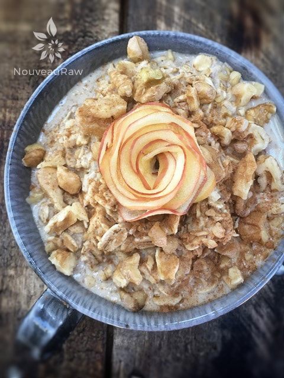
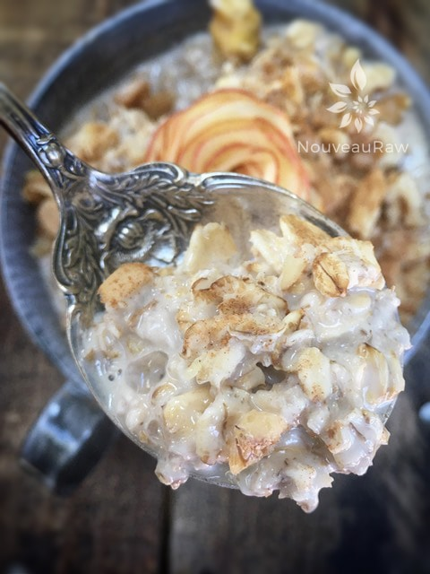

Apple Butter Oatmeal

~ raw, vegan, gluten-free ~
This is surefire, stick to the ribs kind of breakfast! Not as in an unhealthy stick to the ribs, but as in a breakfast that will help fuel you throughout the morning.
You can eat this cold, at room temperature or even warm it in the dehydrator if you wish. Slide the bowl into the dehydrator, turn it up to 145 degrees (F) and let it warm up while you get ready for the morning. I wouldn’t let it go more than an hour, so don’t fuss too long over your hair. :)
I bet you are concerned about it not being raw if we turn the machine up to 145 degrees. If you are, please read the following post that I did, explaining why it is ok. Dehydrating at 145 Degrees. Keep this info lodged in your memory banks as it will help you when you are seeking a warm, raw breakfast in the future.
Ingredients:
- 1 cup almond nut milk
- 1/2 cup rolled, gluten-free oats
- 3 Tbsp apple butter
- 1-2 tsp raw agave nectar or maple syrup
- 1 Tbsp chopped raw walnuts
- 1/2 apple diced for topping along with 6 whole walnuts for garnish.
Preparation:
- In a medium-sized bowl whisk together all the ingredients except for the chopped nuts and diced apple (those are for the topping).
- Allow mixture to rest overnight in the fridge or allow it to sit on the counter for 1 hour. If the porridge is too thick feel free to add a tad more nut milk.
- When you are ready to eat, sprinkle the top with cinnamon, diced apple, and chopped nuts. Raisins would be excellent in this as well. But then I love raisins in everything!!
- Note ~ if you are sensitive to phytic acid that is found in oats, soak the oats in a bowl with 1 1/2 cups of water and a dash of salt overnight. Come morning, rinse the oats well and add the remaining ingredients. You can read more here, about the importance of soaking oats. You could also blend this recipe in a blender or food processor if you want it to be creamy.


© AmieSue.com